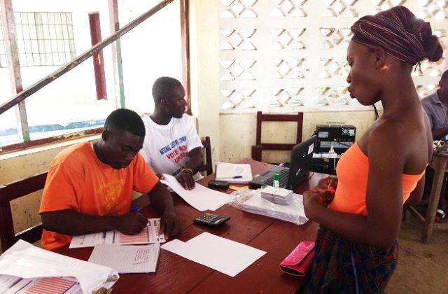
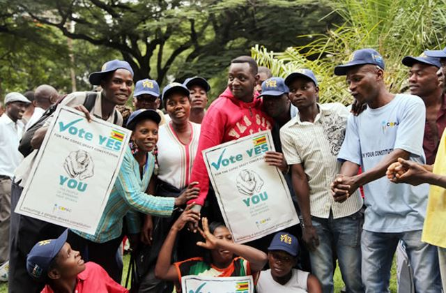
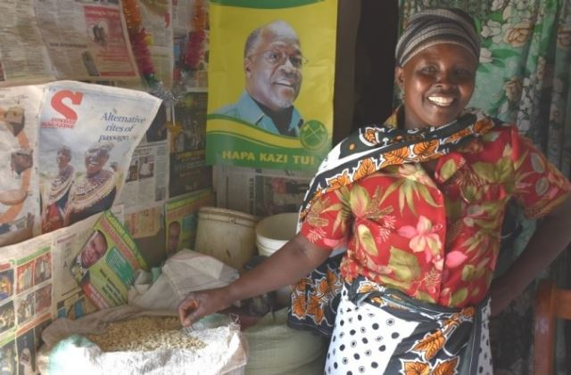
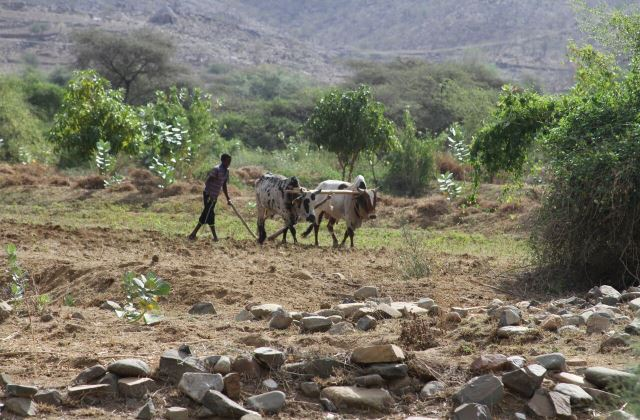
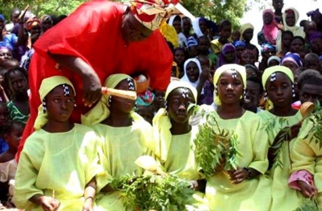
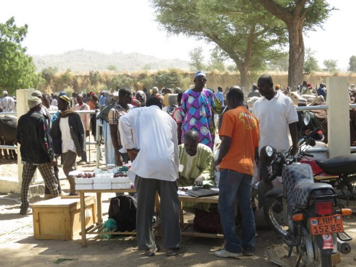
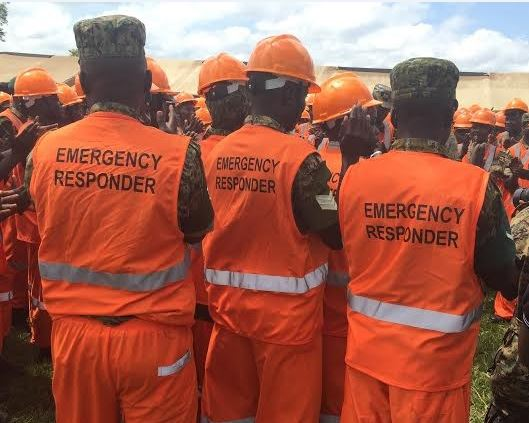
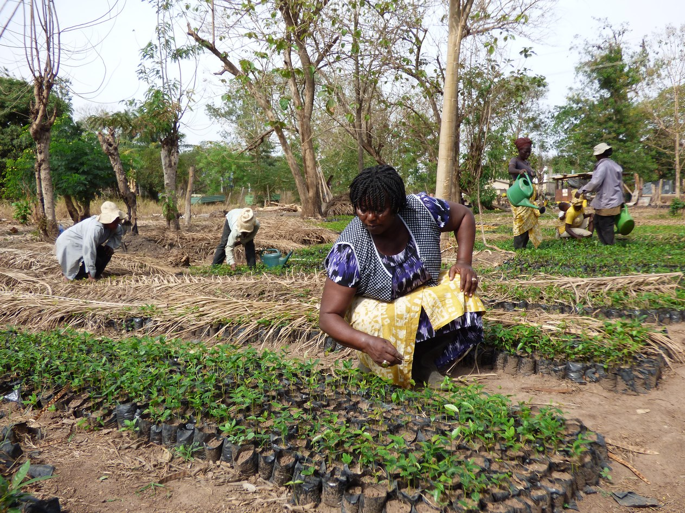

Providing energy, reducing poverty in Mali
Starting in 1997, UNDP, together with UNIDO, worked with the Government of Mali to implement the Multi-functional Platforms project. Aimed at reducing poverty especially among rural women, the installation of diesel-fueled engines has increased access to energy, freed up time spent on laborious tasks and created income-generating opportunities.
AFRICA
UNDP has been present in Africa since the organization was created in 1966. Our Regional Bureau for Africa, which was established at the same time, today services 46 countries in Sub-Saharan Africa through 45 country offices, the Regional Hub in Addis Ababa, Ethiopia and additional offices in Senegal and Kenya.
Having put its lost decades behind, the continent has made significant strides socially, politically and economically since the turn of the 21st century. Rapid democratic transitions are leading to more responsive and accountable governments. The frequency of armed conflicts seems to be on a downward trend. Steady economic growth and macroeconomic stability have returned. Expanded social policies are improving health and education services, including those targeting women and girls.
And yet the vision of an integrated, prosperous and peaceful Africa faces challenges. As countries in Africa are operating at different speeds, the region’s major struggle is to ensure these advances benefit the many. Poverty rates remain stubbornly high, while progress on health, sanitation and food security have been slow and uneven. Women and youth in particular continue to face joblessness and limited opportunities for participation in politics and business. Climate change, natural and man-made disasters risk undoing years of hard-won development gains, and limited access to affordable and sustainable energy impedes productivity.
In line with Agenda 2030, UNDP is supporting Africa’s transformation by enhancing inclusive and sustainable growth, widening political participation, and developing responsive institutions. We work with governments, businesses, communities and regional organizations, helping countries to develop capacity, share knowledge and mobilize funds for sustainable development.
COUNTRY SNAPSHOTS
 Mauritania
UNDP Mauritania / Oumou Sow
Mauritania
UNDP Mauritania / Oumou Sow
Empowering women in Mauritania
Focused on strengthening vulnerable communities and increasing food security, UNDP has supported cooperatives such as Foum Gleita as far back as the 1970s through provision of equipment and training. Launched in 1999 with just 11 members, the Foum Gleita cooperative in the south of Mauritania now has 84.
 Mauritius
UNDP
Mauritius
UNDP
Mauritius: Almost 50 years of partnership with UNDP
Since opening of the UNDP Country Office in December 1969, UNDP has been a trusted partner of the Republic of Mauritius, providing technical and financial support to diversify its economy, foster equity and equality in social programmes, safeguard the environment and protect Mauritius’ unique biodiversity.
 Mozambique
UNDP Mozambique / Kate Brady
Mozambique
UNDP Mozambique / Kate Brady
Mine-free Mozambique
More than 20 years after the end of its civil war, Mozambique declared itself free of landmines in September 2015. The humanitarian demining operations, initially conducted by ONUMOZ, started in January 1993 and culminated in an international effort involving UNDP and other partners.
 Niger
UNDP
Niger
UNDP
Ensuring health and well-being in Niger
A health care worker in Niger inoculates an infant against childhood diseases, circa 1990. At work in the country since 1977, UNDP today supports Niger in such areas as food security, and environmental and disaster risk management. Most recently, UNDP helped strengthen the country's democratic governance by providing technical and financial assistance for its presidential and parliamentary elections held in February 2016.

Liberia
UNDP
Strengthening democracy in Liberia
Committed to ensuring inclusive and effective political processes, UNDP helped Liberia conduct its first post-conflict elections, in 2005, and those that followed. Together with the European Union, UNDP has pledged continued support to Liberia as it looks ahead to fair and peaceful elections in 2017. During the 2014 Voters' Roll Update Exercise pictured here, the National Elections Commission recorded new voters and updated information on other eligible voters.

Zimbabwe
UNDP Zimbabwe
Zimbabwe: Creating a people-driven Constitution
With support from UNDP, Zimbabwe engaged in an historic process that culminated in a new Constitution promulgated in 2013. It includes a comprehensive Bill of Rights covering civil, political, social and economic spheres. UNDP helped establish the constitutional basis for independent commissions on human rights, elections, and peace and reconciliation, thereby enhancing the rule of law and accountability in the country.

Tanzania
Brenda Wawa / CIMMYT
Improving livelihoods in Tanzania with drought-tolerant maize
In the early 1990s, before climate change caught popular attention, UNDP provided funding for research by an international team of scientists at CIMMYT in Mexico on how to breed resilient maize for farmers in drought-prone tropical areas. Several decades later, that scientific concept is now reality. In 2016 more than 2 million farmers are acquiring and growing drought-tolerant varieties in 13 countries of sub-Saharan Africa, including Tanzania.

Eritrea
UNDP Eritrea
Helping Eritrea adapt to climate change
With UNDP support, Eritrea over the last decade has made considerable progress in managing its natural resources. Today, UNDP continues to support Eritrea by helping its agriculture sector increase its resilience and its capacity to adapt to climate change through water harvesting, soil erosion measures, community-based early warning systems, and other work.

Gambia
UNICEF
Protecting women and girls in the Gambia
At work with the Gambia since 1975, UNDP has supported the country's efforts to reduce poverty, protect human rights, and promote gender equality. Following the presidential pronouncement banning female genital mutilation or cutting (FGM/C), UNDP, together with other UN agencies, supported the development of an anti-FGM/C bill, which led to the passage of the 2015 Women’s Act Amendment criminalizing FGM/C.

Cameroon
UNDP
Building communities in Cameroon
Present in the country since 1972, UNDP works with local communities to identify solutions to national challenges in development. In 2015, we worked with the Governments of Cameroon and Japan, to help renew the Zamaï market, in Mokolo city, whose infracture was nearly non-existent prior to the refurbishment. Its renewed facilities have boosted trade at the market, which serves both Cameroonians and Nigerians, including refugees from the nearby Minawao camp, home to 55,194 Nigerians seeking shelter from Boko Haram attacks.

Uganda
UNDP Uganda
Uganda: Turning words into action
With over half the country vulnerable to droughts and a third to floods, disaster risk in Uganda is particularly high. Without addressing the growing levels of disaster and climate risk, the Government estimates that 43 percent of the population could regress into poverty. With support from UNDP, the country has embarked on an ambitious programme to support Ugandans by mapping and profiling hazards, as well as risks and vulnerabilities across the country's 112 districts. With this and other efforts in place, Uganda will be in a much better position to make evidence-based development and investment decisions.

Ghana
UNDP Ghana
Empowering women in Ghana
Women make up almost half the world’s farmers. Yet smaller farms and less access to education and finance makes it more difficult for them to adopt new agriculture technologies. As part of its work through the Green Commodities Programme (GCP), UNDP is bringing together government, big business, small-scale farmers and other stakeholders to make farmers’ practices and livelihoods more sustainable in key agricultural commodities such as palm oil, cocoa and coffee, in ten countries, including Ghana. And success involves closing the gender gap.